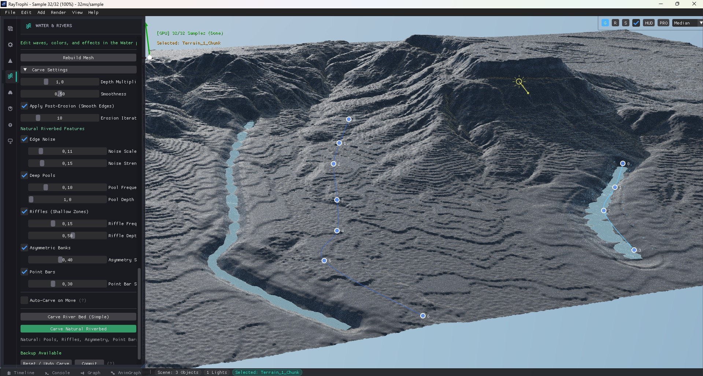

Water & Hydrodynamics

🌊 Please save an Ocean Render as
docs/images/water_header.jpg
Create realistic oceans, lakes, and procedural rivers.
1. FFT Ocean

Please save a screenshot of the FFT Ocean Panel as
docs/images/water_fft.jpg
Uses Tessendorf's FFT algorithm for film-quality waves.
| Parameter | Description |
|---|---|
| Ocean Size | Physical size of a tile in meters. |
| Wind Speed | Energy spectrum (30+ m/s = Storm). |
| Choppiness | Horizontal displacement (Wave peakedness). |
| Foam Scale | Whitecaps threshold. |
2. River Tool

🌊 Please save a River Render as
docs/images/river_header.jpg

Please save a screenshot of the River Spline View as
docs/images/river_spline.jpg
Draw rivers on terrain using Cubic Bezier Splines.
- Add Point: Extend river from current view.
- Subdivide: Add detail between points.
- Flow Map: Water texture scrolls along UVs.
- Turbulence: Distortion for flow vectors.
3. Optics
| Parameter | Description |
|---|---|
| Max Depth | Distance where water becomes opaque. |
| IOR | Index of Refraction (1.333 standard). |
| Caustics | Startling light patterns on the sea floor. |